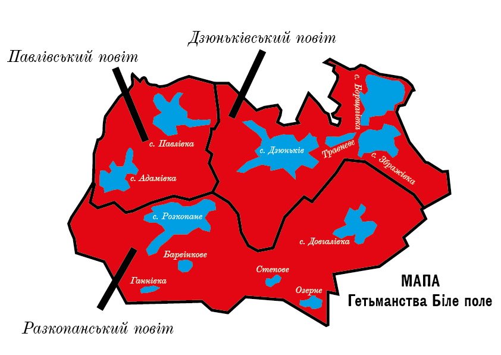

Проєкт «Біле Поле» є **авторським мистецько-культурним та філософським проєктом**, створеним з метою художнього осмислення тем простору, кордонів, історичної пам’яті, ідентичності та спротиву імперським і тоталітарним наративам.
«Біле Поле» діє **виключно в культурно-просвітницькій площині**, не є політичною організацією, **не претендує на будь-яку форму державності**, адміністративної влади, юрисдикції або територіального управління та не проголошує створення окремих державних чи автономних утворень.
Проєкт **повністю поважає суверенітет і територіальну цілісність України** в межах міжнародно визнаних кордонів 1991 року, а всі його дії носять виключно художній, символічний та дослідницький характер.
Метою проєкту є **розвиток культури**, формування простору вільної творчості та міжнародного культурного діалогу, спрямованого на утвердження гуманістичних цінностей, свободи самовираження та протидію імперській дегуманізації через мистецтво та слово.
Продовження Державних Традицій Князівства Північного Підв'язнова
| Головна | Статут | Ген. Старшина | Укази Гетьмана | Зв'язок |
§1. Держава Біле Поле є суверенною та незалежною українською державою, що постала як пряме продовження та відновлення високих традицій Князівства Північного Підв'язнова на етнічних українських землях.
§2. Метою існування Держави є рішуче протистояння фашистському російському загарбнику та утвердження незламності Українського Духу, Мови та Традицій.
§3. Основою державного ладу є Гетьманство, що нерозривно поєднується з непорушними Демократичними Принципами, задля спільного Блага та Свободи народу.
§4. Державною мовою, єдиною для Урядування, судочинства та освіти, визнається **Українська Мова**. Українські традиції та звичаї є неодмінним фундаментом суспільного життя.
§5. Главою Держави та символом її суверенітету є Ясновельможний Гетьман. Влада Гетьмана є довічною, незмінною та передається згідно з встановленим порядком (якщо такий буде в майбутньому уточнений).
§6. Гетьман є найвищим Представником Народу, Головнокомандувачем Війська та Гарантом дотримання Статуту. Його повноваження включають, але не обмежуються: оголошення війни та миру (за згодою Генеральної Старшини), затвердження законодавчих актів та представництво Держави на міжнародній арені.
§7. Гетьман несе особисту відповідальність перед Богом та Народом за долю Держави, але його влада обмежена цим Статутом та Законами, що приймаються на демократичних засадах.
§8. При Гетьмані для управління Державними Справами створюється Генеральна Старшина, що є виконавчим органом влади.
§9. Генеральна Старшина очолюється Генеральним Писарем або іншою особою, уповноваженою Гетьманом, і складається з Генеральних Суддів, Генеральних Обозних та інших, згідно з потребами Держави.
§10. Генеральна Старшина здійснює управління економікою, фінансами, внутрішніми справами та Військом, виконуючи волю Гетьмана та рішення, ухвалені демократичним шляхом.
§11. Повноваження Генеральної Старшини визначені, але не є всеосяжними у тій мірі, як влада Гетьмана. Генеральна Старшина є підзвітною Гетьману та Народу.
§12. Законодавча влада належить **Народній Раді (або Раді Військовій)**, яка формується на основі всезагальних, рівних та прямих виборів серед усіх повнолітніх громадян Білого Поля.
§13. Народна Рада має право ухвалювати закони, встановлювати податки, контролювати діяльність Генеральної Старшини та висловлювати свою думку Гетьману з усіх важливих Державних Справ.
§14. Кожен громадянин має **Невід’ємне Право** на участь у політичному житті, на **Свободу Слова, Сумління та Зборів**, згідно із Законами та цим Статутом.
§15. Судочинство має бути Справедливим, Незалежним та Безстороннім, і здійснюватися лише на підставі Законів, ухвалених Народною Радою, і нести покарання за самоправство.
§16. Територія Держави Біле Поле охоплює землі, історично пов’язані з Князівством Північного Підв’язнова, а також інші території України, які будуть звільнені від російської окупації та приєднаються за волею народу.
§17. Козацьке Військо є опорою Держави та головним гарантом її безпеки та суверенітету. Кожен повнолітній громадянин зобов’язаний до оборони Вітчизни.
§18. Столицею Держави Біле Поле та осердям Урядування проголошується місто **Дзюньків**.
§19. Адміністративно-територіальний устрій Держави поділяється на **Повіти**.
§20. На початковому етапі існування Держави встановлюються такі Повіти: **Дзюньківський**, **Павлівський** та **Розкопанський**.
§21. Порядок утворення, ліквідації та зміни меж Повітів, а також їх управління, регулюється окремими Законами, ухваленими Народною Радою та затвердженими Гетьманом.
Наочне зображення території Держави Біле Поле відповідно до §16 Статуту.
